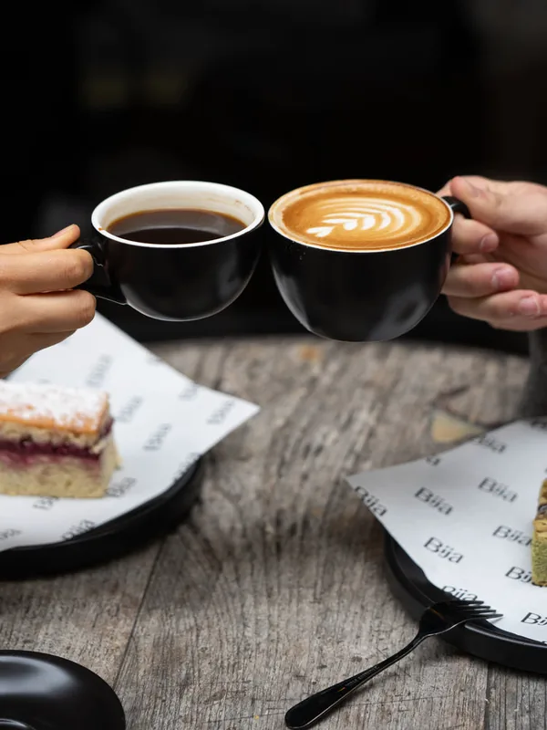
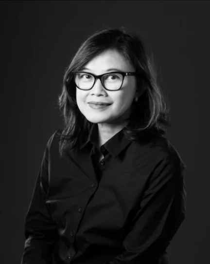
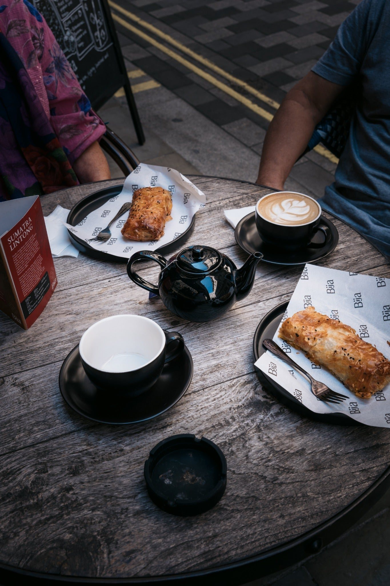

The people behind your cup.
Meet the founder and the investors helping Bija bring Indonesian coffee, and a place worth gathering in, to London.
Devi Trianna.
Devi’s career in media has taken her across London, Dubai and Jakarta. Bija grew from her love of Indonesian coffee and her wish to share the culture around it with the city she calls home.
She brings that experience to the café’s design, its stories and its gatherings, with one simple aim: authentic taste, and a place where people make real connections.

People before everything.
From the first brew to the festival award, Bija has been built by people who believe in Indonesian coffee and in a proper welcome.
Our investors.
Bija is backed by investors who share our faith in Indonesian coffee and the welcome we want to offer London.
They bring experience across banking and finance, law, hospitality, retail and restaurant operations, and with it practical advice, strategic guidance and help in building a business that lasts.
